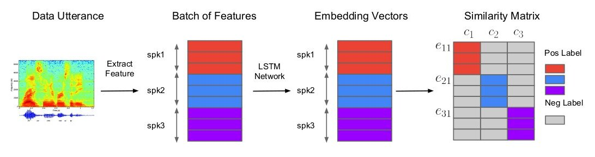
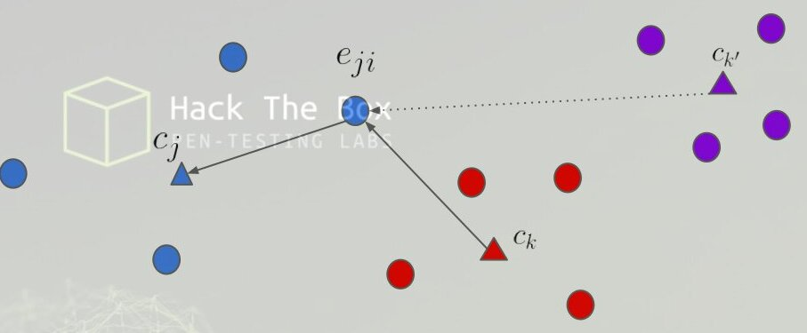
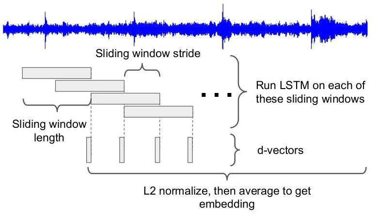
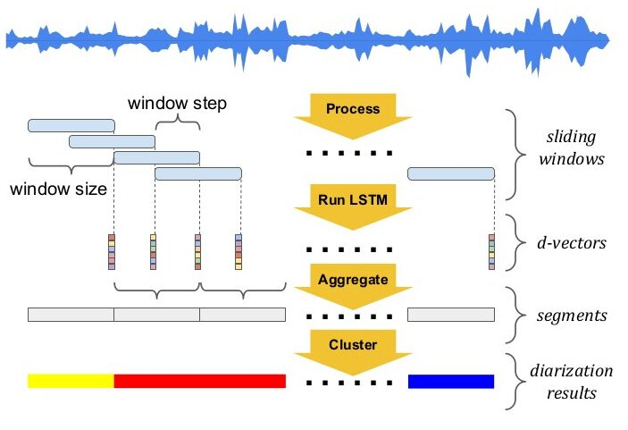

Código Python · celda 2
path_nussl = "./datos"
Contenido convertido sin ejecutar Python. Se conservan las salidas guardadas; las figuras matemáticas sustituidas y los gráficos de PE están identificados en el registro de revisión.
path_nussl = "./datos"
La diarización estima quién habla y cuándo mediante segmentos y etiquetas de hablante, normalmente anónimas. ASR transcribe qué se dice. Se pueden combinar, pero no son la misma tarea.
Referencia: Wang et al. · Speaker diarization
La detección de actividad vocal localiza regiones con habla. Un encoder produce embeddings y un algoritmo de clustering agrupa segmentos por hablante. Agrupar no revela por sí solo la identidad real de una persona. El solapamiento de hablantes necesita tratamiento específico.
Referencia: Wang et al. · Speaker diarization
La verificación del hablante (SV), es el proceso de verificar si una pronuniación, palabras, etc., pertenecen a un hablante específico, en función del conocimiento conocido de ese hablante \cite{wan2018generalized}.
Dependiendo de las restricciones de las expresiones utilizadas para el registro y verificación, los modelos de verificación del hablande usualmente caen en dos categorías:
Verificación del hablante Dependiente del Texto (TD-SV): la transcripción de las expresiones de registro y verificación está limitada fonéticamente.
Verificación del Hablante Independientes del texto (TI-SV): no hay restricciones de léxico en la transcripción de los enunciados de registro o verificación, lo que expone una mayor variabilidad de fonemas y duraciones de los enunciados.
En estudios previos, los sistemas basados en vectores han sido los dominantes en los enfoques para las aplicaciones de TD-SV y TI-SV.
El modelo TE2E simula un proceso en dos etapas de inscripción y verificación en tiempo de ejecución durante el entrenamiento. Para cada paso del entrenamiento, una tupla de un enunciado de evaluación y enunciados de inscripciones (para ) es alimentada a una red LSTM donde , donde representa las características (energías del filtro de bancos logarítimico de mel - log-mel-filterbank energies) de un segmento de tamaño fijo, y representan los hablantes y los enunciados, y y pueden no ser iguales. La tupla incluye un enunciado del hablante y enunciados diferentes para el hablante . Podemos llamar una tupla positiva si y los enunciados inscriptos son de el mismo hablante, es decir , y una tupla negativa en cualquier otro caso.
Para cada tupla de entrada, se calcula la respuesta normalizada de la red LSTM: , donde cada es un vector de embedding de dimensión fija que resulta del mapeo de vector-secuencia definido por la LSTM. El centroide de la tupla reprecenta la huella (voiceprint) de la voz construida a partir de enunciados, y se define de la siguiente manera:
La similitud se define usando la función de similitud de cosenos:
con y entrenables. La pérdida TE2E se define entonces como:
donde es la función sigmoide y es igual a si , en cualquier otro caso es . La función de pérdida TE2E fomenta un mayor valor de cuando , y un valor menor de cuando .
GE2E entrena con N hablantes y M≥2 segmentos por hablante. Los embeddings se normalizan en norma L2. Para comparar un segmento con su propio hablante, el centroide excluye ese segmento: . Los centroides de otros hablantes usan sus M segmentos. Se aplica similitud coseno con escala positiva y sesgo aprendidos, seguida del objetivo de entrenamiento.
Referencia: Wan et al. · GE2E

Como se muestra en la fig., queremos los valores de similitud de las áreas coloreadas para que sean más grandes, y los valores de las áreas grises para que sean más pequeñas. Fig. tomada de \cite{wan2018generalized}.
La fig. de abajo, ilustra el mismo concepto de una forma diferente: queremos que el vector de embedding azul esté lo más cercano a su propio centroide del hablante (triángulo azul), y lejos de los demás centroides (triángulos rojos y púrpuras), especialemente el más cercano (triángulo rojo).

Fig. tomada de \cite{wan2018generalized}.
La similitud correcta es para k≠j y , con w>0. El sesgo queda fuera del coseno. El objetivo softmax es ; la etiqueta objetivo es one-hot, pero las probabilidades no se vuelven exactamente cero o uno con logits finitos. La alternativa contrastiva penaliza el positivo y el negativo con mayor similitud. GE2E suma las pérdidas de los segmentos del batch.
Referencia: Wan et al. · GE2E
GE2E reutiliza un batch con varios hablantes para comparar cada segmento con centroides positivos y negativos. Esto aporta muchas comparaciones en una actualización. No significa que su gradiente o el paso del optimizador sean idénticos a ejecutar una cantidad fija de pasos TE2E.
Referencia: Wan et al. · GE2E
Consideremos el siguiente caso: nos importa la aplicación del modelo en un dominio con un dataset pequeño . Al mismo tiempo, tenemos un dataset más grande en un dominio similar pero no idéntico. Luego, queremos entrenar un modelo simple que funcione bien sobre el dataset , con la ayuda de :
Esto es similar a la técnica de regularización: en una regularización normal, usamo para regularizar el modelo. Pero aquí, usamos para la regularización. Cuando el dataset no tiene los suficientes datos, entrenando los datos sobre puede conducir a un sobreentrenamiento. Requerir que la red también funcione razonablemente bien en ayuda a regularizar la red.
Esto puede generalizarse para combinar diferentes (posiblemente muy desvanlanceadas) fuentes de datos: . Se asigna un peso a cada fuente de dato, indicando la importancia de dicha fuente de datos. Durante el entrenamiento, en cada paso se introduce un lote/tupla de enunciados de cada fuente de dato, y se calcula la pérdida combinada como:
donde cada es la pérdida definida en la ec. 10.
Durante el proceso de extracción de características, las señales de audio son primeramente transformadas en frames de de ancho y un paso de . Luego, se extraen energías del filtro de bancos de mel logarítmico (log-mel-filterbanck) de dimensiones como características para cada frame. Para las aplicaciones de TD-SV, las mismas características son usadas para la detección de palabras claves y la verificación del hablante. El sistema de detección de palabras claves solo pasará los frames contenidos en la palabra clave a través de un sistema de verificación del hablante. Estos frames forman un segmento de longitud fija (usualmente ). Para las aplicaciones de TI-SV, usualmente se extraen segmentos de longitud fija aleatorios después de usar VAD, y se utiliza un enfoque de desplazamiento de ventana para la inferencia.
El sistema utiliza capas LSTM con proyección. El tamaño del vector de embedding (d-vector) es el mismo tamaño que el tamaño de la poyección LSTM. Para TD-SV, se utilizan nodos ocultos y el tamaño de la proyección es . Para TI-SV, se utilizan nodos ocultos y el tamaño de la proyección es . Cuando se entrena el modelo GE2E, cada lote contiene hablantes y expresiones por hablante. Luego, se entrena la red con SGD usando una taza de aprendizaje (learning rate) de , y se reduce a la mitad por cada pasos. La norma del gradiente es recortada en , y la escala del gradiente para el nodo de proyección en LSTM se establece en .
Los datos y resultados citados corresponden a experimentos publicados en 2018. No describen necesariamente los sistemas desplegados hoy ni permiten prometer el mismo rendimiento con otros datos.
Referencia: Wang et al. · Speaker diarization
Para el entrenamiento de TI-SV, se divide las expresiones de entrenamiento en segmentos pequeños, a los cuales se refieren como expresiones parciales. Mientras que no se requiere que todas las expresiones parciales ser del mismo tamaño, estas epxresiones en el mismo lote deberían ser del mismo tamaño. Por lo tanto, para cada lote de datos, se eligen aleatoriamente una longitud de tiempo entre frames, y haciendo que todas las expresiones parciales en ese lote tengan una longitud , como se muestra en la siguiente fig.:

Ventana de desplazamiento ustilizada para TI-SV. Fig. tomada de \cite{wan2018generalized}.
En este papers, los autores han implementado todo el sistema de diarización en cuatro subsistemas. En las siguientes secciones se dará una explicación de cada subsistema utilizado.
Como vimos anteriormente, \cite{wan2018generalized} proponen una red de embedding del hablante basado en LSTM para TD-SV y TI-SV. Su modelo se entrena sobre segmentos de longitud fija extraídos de un gran corpus de audio de habla arbitrario. Ellos demostraron que los embedding de los vectores producidos por tales redes generalmente superan significativamente a los vectores en una aplicación de dos etapas de verificación de inscripción (enrollment-verification 2-stage).
En el sistema propuesto por \cite{wang2018speaker}, las señales de audio son transformadas primero en en frames de y un paso de , y se extraen las energías del filtro de banco de mel logarítmico (log-mel-filterbanck energies) de dimensiones de cada frame como entrada de la red. Se construye unas ventanas de desplazamiento de tamaño fijo sobre estos frames, y se corre la red LSTM sobre cada ventana. La salida del último frame de la LSTM es entonces usado como la representación de un vector de esta ventana de desplazamiento.

Diagrama de flujo del sistema basado en diarización con vectores. Fig. tomada de \cite{wang2018speaker}
Para este sistema, \cite{wang2018speaker}, utiliza la Detección de Actividad de la Voz (Voice Activity Detector -VAD) para determinar los segmentos del habla del audio, los cuales son divididos en segmentos sin superposición usando un límite de segmento-longitud máximo (es decir, en su experimento), el cual determina la resolución temportal de los resultados de la diarización. Para cada segmento, los vectores correspondientes son primeramente normalizados con la norma , luego, se toma el promedio de la forma de un embedding del segmento.
Este proceso sirve para reducir la entrada de audio de longitud arbritaria en una secuencia de embeddings de longitud fija. Luego, se aplican una serie de algoritmos de clusterización para usar estos embeddings para determinar el número de hablantes únicos, y asignar cada parte del audio a un hablante específico.
Para el desarrollo de este sistema, \cite{wang2018speaker} propone cuatro algoritmos de clusterización. Además, estos algoritmos pueden ser separados en dos categorías según la latencia del tiempo de ejecución:
Clusterización en Línea (Online Clustering): una etiqueta de un hablante se emite inmediatamente una vez que un segmento está disponible, sin mirar los segmentos futuros.
Clusterización Fuera de Línea (Offline Clustering): las etiquetas de los hablantes son producidas después de que los embeddings de todos los segmentos estén disponibles.
Este es un algoritmo de clusterización en línea prototípico. Se aplica un umbral sobre las similitudes entre los embeddings de los segmentos. Para ser consistentes con la arquitectura de entrenamiento de extremo a extremo (end-to-end) generalizada, se utiliza la similitud de cosenos como una métrica de similitud.
En este algoritmo de clusterización, cada cluster se representa por el centroide de todos sus emebeddings correspondientes. Cuando un nuevo segmento está disponible, se calcula sus similitudes a los centroides de todos los clusters existentes. Si son todos más pequeños que el umbral, entonces se crea un nuevo cluster que contiene solo ese embedding; en cualquier otro caso, se añade este embedding al cluster de mayor similitud y se actualiza el centroide.
Este es un método de clusterización que mejora el rendimiento del enfoque anterior \cite{wang2018speaker}. Se estima las distribuciones de probabilidad del cluster y se modela su subestructura basada en los vectores de embeddings recibidos hasta aquí.
El enfoque de Links es estimar la distribución de probabilidad de cada cluster basado en sus vectores constituyentes actuales, para usar estas estimaciones para asignar nuevos vectores a los clusters, y para actualizar las distribuciones de las estimaciones de cada vector añadido. El paso de actualización incluye la corrección de asignaciones de clusters anteriores donde se indica teniendo en cuenta los datos adicionales, aunque esto es principalmente para mejorar el modelo interno con el tiempo, dado que en los escenarios típicos de uso en línea, cada asignación de clúster se proporciona una vez, en el momento en que se presenta una nueva.
En un modelo angular alrededor de un centro unitario, una densidad proporcional a debe normalizarse respecto de la medida de superficie. En dimensión N, el área de la esfera unidad es y el elemento angular contiene . La densidad marginal angular no es una gaussiana ordinaria ni tiene necesariamente su máximo en cero.
Referencia: Mansfield et al. · Links
Normalizar la suma de vectores da la dirección de la media extrínseca, si la suma no es cero. No es en general la media de Fréchet para distancias geodésicas sobre la esfera. La concentración angular usada por Links es una aproximación de modelado.
Referencia: Mansfield et al. · Links
En alta dimensión, dos vectores independientes e isotrópicos, normalizados, tienden a ser casi ortogonales. Para la distribución uniforme en la esfera, el producto punto tiene media 0 y varianza .
No basta con que sea grande: embeddings correlacionados, distribuciones anisotrópicas o vectores elegidos de forma adversa pueden violar esa conclusión. Las aproximaciones de concentración de un cluster requieren supuestos sobre su distribución; no son tres lemas universales para cualquier conjunto de d-vectors. Conviene contrastarlas con la distribución y las métricas del experimento.
Referencia: Wang et al.: Speaker Diarization with LSTM
Con 0<T_c<1, el umbral aproximado de Links para un nuevo vector y un subcluster de k miembros es Así s(1)=T_c² y el límite al crecer k es T_c. El numerador es T_c². Es un umbral del modelo y sus supuestos, no una identidad universal para cualquier distribución de embeddings.
Referencia: Mansfield et al. · Links
Cada nuevo vector de entrada se asigna a un cluster tan pronto como se produce, sin conocimiento de los vectores futuros y sin retroceso. Un ID único para el cluster es retornado. El cluster mantiene información estadística acerca de los vectores recibidos hasta el momento. Además, no puede cambiar las respuestas anteriores, si puede cambiar la representación interna de las estadísticas del cluster, tal como mejora de las distribuciones estimadas así como las divisiones y mezclas de los clusters cuando es indicado por la nueva información.
La representanción interna del algoritmo de Links es una jerarquía en dos niveles: los clusters son colecciones de subclusters, y los subclusters son colecciones de vectores de entrada. Los subcluster son representados como nodos en un grafo cuyas aristas (egdes) se unen a los nodos (aristas) "cercanos" (es decir, subclusters que probablemente pertenecen al mismo cluster dados los datos hasta el momento), y los clusters están definidos como componentes conectados del grafo. Mientras que los subclusters son indivisibles, los clusters pueden dividirse a lo largo de las aristas en respuesta a los cambios en las distribuciones de probabilidad estimadas cuando un nuevo dato es añadido. Alternativamente, los sublcusters pueden unirse por una arista que puede ser mezclada en respuesta a los cambios.
Las razones para mantener una jerarquía de dos niveles (en lugar de un número arbitrario de niveles) es la eficiencia y la practicidad. Es eficiente porque el algoritmo escala con el número de subclusters en lugares del número de vectores. Y es práctico, porque la subestructura del cluster clave que puede afectar los ID de los clusters futuros es el conjunto de posibles puntos de división.
En la comparación entre subclusters, k_J cuenta los vectores del subcluster J. Se crea una conexión cuando la similitud satisface el umbral de conexión; no se invierte esa condición. Las componentes conectadas del grafo definen los clusters.
Referencia: Mansfield et al. · Links
Cuando un nuevo vector se añade a un sublcuster existente, los centroides de los subclusters deberían cambiar. Si esto lo trae dentro del umbral de similitud del subclúster del centroide de otro subclúster actualmente unido al primero por una arista, entonces los dos se funcionan. En otras palabras, si , entonces los nodos y son reemplazados con un nodo que contiene los vectores de ambos, y con las conecciones de las aristas de ambos. Dado que el proceso de mezcla también resulta en un nuevo centroide del subclúster, esto verificación continúa de manera recursiva en los subclústeres afectados.
A continuación, las aristas se comprueba la validez de las aristas que unen los nodos afectados. La arista que une los subclústeres y se elimina si lo siguiente no se mantiene:
donde es la aproximación dado en la ec. 16, pero aplicando las mejoras de Anisotropía. Después de dividir un clúster en dos eliminando una arista, se intenta volver a unir las dos partes agregando una arista del nodo afectado a nuevo nodo asociado que satisface la desigualdad 22. Si no se ecuentra un miembro, entonce el clúster permanece permanentemente dividido.
Las ecuaciones 13 y 16 fueron usadas para determinar los umbrales para los miembros en un mismo clúster dado un subclúster, tratando efectivamente a los miembros del subclúster como elegidos al alzar del clúster y no correlacionados entre sí. Si uno tuviera en cuenta adecuadamente las correlaciones intra-subclúster, entonces una consecuencia es que el límite en la ec. 18 podría ser reducido a un número positivo , el cual se llama máxima similitud de pares.
mientras que el valor de , el cual es , quedaría sin cambios. Cualquier anisotropía implícita en la distribución del clúster, como una elongación a lo largo de un eje preferido, reduciría aún más el valor de sin cambiar . Una forma simple aunque aproximada de incorporar estos ajustes en el algoritmo es reemplazar y por las versiones interpoladas siguientes:
Las etiquetas de cluster son arbitrarias: intercambiar sus números no cambia el agrupamiento. Para evaluar diarización se alinean hablantes y se usa una métrica como DER, declarando collar y tratamiento del solapamiento. Una exactitud de IDs sin alinear no es una evaluación válida.
Referencia: Wang et al. · Speaker diarization
El método de codo es una heurística sobre una curva de dispersión; no equivale a maximizar siempre el valor absoluto de su primera derivada. La cantidad de hablantes y la calidad del clustering deben evaluarse con un protocolo explícito.
Referencia: Wang et al. · Speaker diarization
En clustering espectral se construye una afinidad, se aplica el refinamiento definido y se examinan autovalores ordenados para estimar la cantidad de clusters. El criterio de eigengap requiere limitar el rango y tratar denominadores nulos. Una normalización por filas puede romper la simetría: no se debe usar un solver exclusivo de matrices simétricas sin comprobarla. El umbral no conoce las etiquetas reales.
Referencia: Wang et al. · Speaker diarization
from resemblyzer import preprocess_wav, VoiceEncoder
from pathlib import Path
#give the file path to your audio file
audio_file_path = 'test-w.wav'
wav_fpath = Path(audio_file_path)
wav = preprocess_wav(wav_fpath)
encoder = VoiceEncoder("cpu")
_, cont_embeds, wav_splits = encoder.embed_utterance(wav, return_partials=True, rate=16)
print(cont_embeds.shape)
Loaded the voice encoder model on cpu in 0.19 seconds. (344, 256)